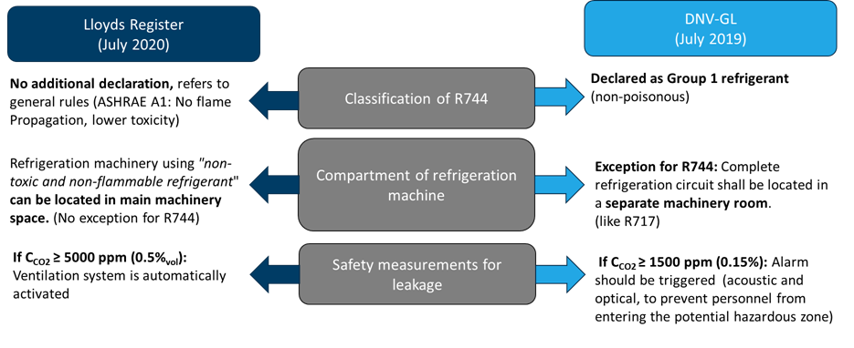

Working fluids
Refrigerants
R-22 (HFCF-22) is the dominant refrigerant in marine refrigeration systems with a share of 70% in marine applications, particularly in fishing vessels (UNEP, 2016). However, it has harmful effects on the environment such as high ozone depletion (ODP) and global warming potential (GWP). Due to its detrimental effects, transition to the systems with environment-friendly refrigerants is essential for a sustainable and emission-free future. All other synthetic refrigerants -chlorofluorocarbons (CFCs), hydrochlorofluorocarbons (HCFCs), and hydrofluorocarbons (HFCs) are also harmful and therefore they will be phased out soon. Hydrofluorolefins (HFOs), such as R-1234yf, R1234ze and R-513A etc., which have low GWP thanks to their one or more carbon-carbon double bonds that enable them to be disintegrated in the atmosphere in less than 11 days, are also seen as alternatives to the existing R-22 systems. This short disintegration period, however, causes an increase in releasing trifluoroacetic acid (TFA) which is toxic and may cause serious health hazards (Adamson, 2021). Moreover, they are flammable which makes their installation to marine applications difficult, particularly in fishing vessels.
In marine refrigeration, transition from environment harmful technologies to environmentally benign ones will be possible by utilising the systems based on natural refrigerants, especially ammonia (NH3, R-717) and carbon dioxide (CO2, R-744). Hydrocarbons (methane, ethane, propane, butane, ethylene, and propylene) would be good alternatives because of being non-toxic and having good refrigerant properties. However, they are also flammable.
R-717 is one of the oldest refrigerants in use today. It was introduced as a refrigerant in 1858 in a vapour absorption system, then in 1873 in a vapour compression system. It became commercially available in 1913 (ASHRAE, 2018). It has been the second mostly used refrigerant in the refrigeration systems for fishing vessels (UNEP, 2016) and it is the main refrigerant used onboard Norwegian fishing vessels (Nordtvedt and Widell, 2020). This is because it has zero global warming potential (GWP), low molecular weight, high evaporation enthalpy, simple leak detection and oil management. It also needs less stringent drying procedures compared to other refrigerants. However, it is flammable, therefore during the design phase, this must be considered, and the necessary measures must be done during operation. Moreover, the materials like copper, zinc and their alloys cannot be used with R-717 due to corrosion (Lorentzen, 1988). Lastly, a separate refrigerating machinery room is required for R-717 systems in the ships (DNV, 2011) which necessitates the usage of large space.
R-744 was proposed to be applied as a refrigerant in 1850 by Alexander Twining and then first R-744 refrigeration system was built in 1860 by S.C. Lowe (Koegelenberg et al., 2020). R-744 gained favour during 1880s. Its utilization declined after 1925 but it was applied until the 1950s, especially in marine applications. It lost market shares with the introduction of non-natural low-pressure refrigerants and substituted by them from 1950 to 1970 (Pearson, 2005). Nevertheless, in the time of the rising concerns over climate change, it has regained the attention since the achievement of the effective control of the transcritical vapour compression cycle’s capacity by Gustav Lorentzen (Lorentzen, 1990). It is estimated by shecco that the number of transcritical R-744 refrigeration systems in 2020 is above 35,000 globally (Koegelenberg et al., 2020). Owing to firstly being non-toxic and non-flammable, secondly having low GWP (at 100 years is 1), and then excellent thermophysical and transport properties, such as high thermal conductivity and vapour density, and low viscosity. The number of R-744 refrigeration systems, particularly R-744-only solutions, is increasing in the applications for supermarkets, hotels, malls, etc. Besides that, R-744-only solutions are very attractive for the energy-efficient integrated systems with heat recovered for domestic hot water and space heating along with meeting cooling and freezing demands.
According to the review study by Söylemez et al. (2022), the application of transcritical R-744 units in fishing vessels operating in cold-climate regions is increasing. If there is a need for freezing applications onboard, the R-744 systems are the preferred refrigeration technology. This is because, at first, the freezing temperatures are limited to around -40 °C in R-717 systems (Mønsted, 2011). Secondly, it is possible to design compact R-744 systems with the freezing temperatures around -50 °C. This reduces the freezing time and the required suction pipe diameters for the system. In some fishing vessels where the dominant cooling load is due to RSW cooling, R-717 is a viable and applied option too.
For the higher seawater temperatures (around 30 °C), the system design must be adapted for the high heat-rejection seawater temperatures, and it is dependent on the type of refrigeration demand and capacity. If the demand for chilling/RSW is higher, R-717 is the most energy efficient solution. If there is a higher demand for freezing, a cascade R-717/R-744 unit is probably more suitable solution because of the lower freezing temperatures achieved by R-744. In these systems, worth to mention that since the preservation of valuable food and the limited space required by the cooling/freezing equipment, decreasing the freezing time has a higher priority than the energy efficiency for ship owners.
Moreover, previous research activity at SINTEF and NTNU has contributed to the development of efficient and safe R-744 systems for various application from RSW units, supermarkets to industrial heat pumps. A change to energy efficient systems using natural refrigerants, on a global scale, would lead to a significant contribution in reducing the carbon footprint of the fishing sector. If, instead, the phase-out is done in the «easiest» way, to HFCs, the carbon footprint will rather increase than decrease. It is therefore of outmost importance for knowledge transfer regarding the use of natural refrigerants.
| Type | Fishing vessels | Passenger/Cruise ships | Cargo | Others |
|---|---|---|---|---|
| Purpose of main refrigeration equipment | Chilling of the catch | Air conditioning (AC) and provision cooling/freezing | Maintain temperature of the cargo, air conditioning | Air conditioning |
| Current working fluids | Globally: R22 Europe: R22/HFC Nordic: R717, R744, HFC |
Nordic: HFC Globally: R22, HFC, R744 for provision cooling and freezing |
Nordic: HFC Globally: R22, HFC |
|
| Challenges with current working fluids | Fast phase out of R22 required High cost of HFC due to shortage in the European market (EU Regulation) Safety requirements for R717 equipment |
Fast phase out of R22 required High cost of HFC due to shortage in European market (EU Regulation) |
||
| Alternative/future working fluids | R717 and R744 | R717, hydrocarbons (e.g. R290) and R744 | ||
| Advantage with alternative working fluids | R717: well-known and high energy efficiency for chilling equipment R744: high performance in deepfreezing/batch freezing applications, non-flammable and non-toxic |
High-energy efficient chillers for AC units with R717 and R290 High-energy efficiency, global availability and safety with R744 for direct expansion (and indirect) provision cooling/freezing units |
High-energy efficient chillers for AC units with R717 and R290 |
A summary of feasible natural working fluid alternatives for different applications. Note: R744 is carbon dioxide, R717 is ammonia
Regulations
The main regulatory institution for marine refrigeration plants are the International Maritime Organization (IMO) and the Classification Societies.
International regulations: The IMO convention MARPOL covers international regulations for the prevention of pollution of the marine environment by ships from operational or accidental causes. MARPOL, Annex VI, regulates emissions to air, including leakage of refrigerants. New installations containing CFC or Halon are not permitted on ships constructed on or after 19 May 2005, while new installations of HCFC equipment was prohibited after 1 January 2020, both on new and existing ships. The GWP of refrigerants is not constrained by any IMO mandatory requirements, thus there are no restrictions for using HFCs on board ships. Even though IMOs future targets on reduced climate impact consider the greenhouse warming impact of ships. Therefore, in addition to CO2-emissions, other equivalent carbon emissions (such as F-gases used as refrigerants) should be considered.
European regulations: The first EU Regulation No. 842/2006 on fluorinated greenhouse gases (F-gases) was adopted in 2006 with the aim to reduce emissions of fluorinated greenhouse gases through, for example, periodic leak tests, record keeping, proper recovery and certification. The regulation only applies to stationary equipment, thus not to marine vessels (European Commission, 2006). In 2014 a new EU Regulation on F-gases, No 517/2014, was adopted, and applies from 1 January 2015 (European Commission, 2014). Except from strengthening the existing leakage prevention measures it also limits the production and use of F-gases.
The regulations concerning leakage prevention, record keeping and certification, still does not apply to ships, while the recovery regulation does. There is also a general obligation (for all type of plants) to avoid unintentional HFC-leakages. The service ban on existing high GWP-systems also applies to ships. This means that installations containing an HFC with a GWP > 2,500 and an amount corresponding to 40 tonnes CO2 equivalents are prohibited to be recharged with new refrigerant after 1 January 2020 and with recycled refrigerant after 1 January 2030. Furthermore, the limits on the amount of F-gases that can be put on the EU market as well as the ban of using F-gases in many types of new equipment will have an indirect impact also on the shipping sector, such as lower availability and higher price.
In the future planning for investments, it is therefore important to take into consideration that the average GWP value of F-gases (calculated as CO2-eq.) imported to the EU will decline according to the schedule specified in Annex V of the regulation. This will have an impact on market availability and prices of GWP refrigerants for all applications.
Classification Societies
Classification societies set specific requirements for the design, construction, and maintenance of ships as a complete system. Minimum requirements are set for all components that are relevant to safety, in line with the International Convention for the Safety of Life at Sea (SOLAS).
Specific requirements related to marine refrigeration applying natural refrigerants are not fully developed. Lloyd’s Register and DNV have to some extent included the use CO2 of as refrigerant, however with different requirements.

Example of regulations for R744 as working fluid on cruise ships
In addition to minimum requirements, most Classification Societies are offering class notations as a proof of compliance with additional pollution prevention measure, for example the use of low-GWP refrigerants.
DNV offers two class notations including additional requirements on refrigeration systems having more than 10 kg initial charge of refrigerant in centralised air conditioning systems and provision plants. Domestic type stand-alone air conditioning units and refrigerators do not fall into requirements
- Class notation «Clean»: The use of ozone depleting substances is not permitted. The refrigerant may be an HFC or natural refrigerants, such as NH3 or CO2. Annual refrigerant leakage shall be not more than 10% of the total refrigerant charge for each system.
- Class notation «Clean Design»: Refrigerants shall be either a natural refrigerant (e.g., NH3 or CO2) or alternatively an HFC with GWP ≤ 2000. This means that the commonly used refrigerant R404A is prohibited, but still allows the use of, e.g., R-134a and R407C.
ABS offers one class notations with additional requirements to MARPOL
- ENVIRO+ prohibits the use of refrigerants with a GWP > 2000, other for ships with the notation EP2020+. The EP2020+ signifies the commitment to replace the existing refrigerant with one having a maximum GWP of 2000
Lloyds offers one class notations, and on supplementary «environmental character, related to refrigeration systems.
- «ECO rules»: The use of ODS in existing and new installations is prohibited, and «where possible», natural refrigerants, such as ammonia, carbon dioxide and Hydrofluoroolefins (HFOs), should be used». For the use of HFCs, there is a maximum GPW limit of 1950. These requirements include permanently installed refrigeration and air conditioning installations with more than 3 kg of refrigerant, but does not apply to stand-alone refrigerators, freezers and ice makers used in galleys, pantries, bars and crew accommodation.
- «Character R”; For assignment of the R character, natural refrigerants are to be used in all main refrigeration systems such as provision rooms and AC plants. Small factory-built system(s) that use refrigerants having a GWP < 1,950 are allowed
RINA (Registro Italiano Navale) offers several different class notations, of which the most relevant in this context are «Clean Air» and «GREEN PLUS»
- «CleanAir» includes requirements on centralised refrigeration systems. The use of ODS is prohibited, the maximum allowable GWP is 2000, and the maximum annual leakage rate is 10%.
- «GREEN PLUS»: include restrictions on the use of GWP refrigerants in central refrigerating facilities, such as provision refrigeration systems and air conditioning plants. They do not apply to domestic type standalone refrigerators and air conditioning systems. There are two alternatives for complying:
- Avoid use of refrigerants with GWP > 150. If natural refrigerants are applied (i.e., CO2) the energy efficiency must be ±20% to traditional refrigeration systems.
- Design the system minimising piping systems carrying the refrigerant.
Bureau Veritas: The class notation CLEANSHIP: prohibits the use of ODS (HCFCs) in the ship’s centralized refrigerating and air conditioning plants, while CLEANSUPER additionally requires that all refrigerants used onboard have a GWP not exceeding 2000.